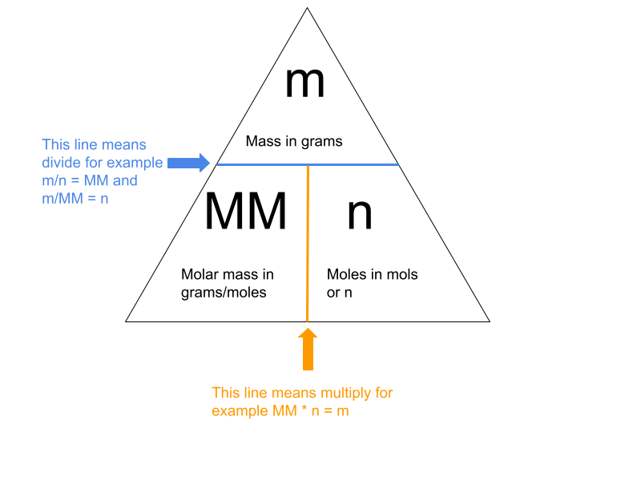

The reason moles are significant is because they allow us to convert numbers of moles in a sample to a mass, for example, if we know the number of moles of NaCl, we can figure out what its mass is in grams and vice versa. To do this, we can use this triangle to help us figure out what equation to use.(scroll down to view examples)
If there is a question that says, how many molecules are there in 2 moles of hydrogen? All we need to do is multiply the number of moles by Avogadro's number. Since 2 * 6.022 * 10^23 = 1.2044 * 1024 (note that we must keep the sig figs the same as the smallest amount of sig figs 1.2044 * 10^24 in this case it would be 1.204 * 10^24), therefore there are 1.204 * 10^24 in 2 moles of hydrogen.
If there is a question like how many moles are there in 2.5*10^20 molecules of H2O? All we need to do is divide the amounts of molecules by Avogadro's number. In this case, it would be 2.5 * 10^20 molecules / 6.022 * 10^23 molecules/mols, leaving us with 4.151444703 * 10^-4 (note that we must keep the sig figs the same as the smallest amount of sig figs 4.151444703 * 10^-4, in this case, it would be 4.151 * 10^-4).
If, we are told that there are 5 moles of NaCl and to convert that to grams. First, we figure out what the molar mass is, this can be done by looking at its atomic mass, because one MM(molar mass) of an element is equal to its atomic mass. In addition, the MM of NaCl is 22.99(the atomic mass of Na) plus 35.45 (the atomic mass of Cl) the molar mass would be 58.44. Now that we know its molar mass to convert it to grams, we can look at the triangle to figure out what equation to use. Since we have the molar mass and the number of moles, we can use this equation MM * n = m. Lastly, we can plug everything into the equation and solve for the mass, 58.44 * 5 = 292.2 g (note that we must keep the sig figs the same as the smallest amount of sig figs 292.2 in this case it would stay the same), now we can finish with our concluding statement, therefore, there are 292.2grams of NaCl in 5 moles worth of NaCl.
If, a question asks how many moles there are in 80g of HNO3? First, we figure out the molar mass we can do this the way learned in example three (note that oxygen's atomic mass must be multiplied by three). Now that we know the molar mass, we can look at the triangle to figure out what equation to use, in this case, we would use m/MM = n. Next, we plug everything into the equation 80.0 g / 6.302*10^1 g/mols = 1.269438274 mols (note that we must keep the s ig figs the same as the smallest amount of sig figs 1.269438274, in this case, would be 1.27), therefore, there are 1.27 moles in 80.0 g of nitric acid. (Great job after reading these example you are ready to take on the test please navigate to the test page)